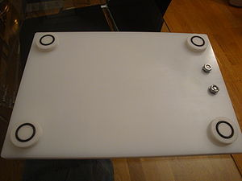
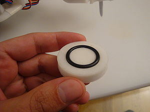
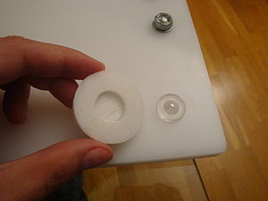
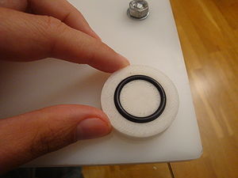
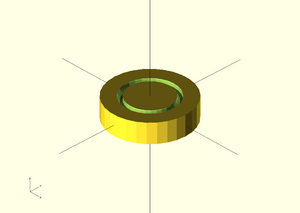
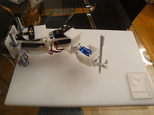

| Patas de mesa en Thingiverse |
|---|


4 patas puestas en una tabla de cortar (click para ampliar)
Contenido
[ocultar]Introducción
Pata pequeña para levantar una mesa, tabla de cortar o similar. El diseño es parámétrico. Incluye hueco para colocar una junta tórica y que se agarre mejor al suelo. En la parte superior tiene un hueco (opcional) para colocar las patas de goma de las tablas de cortar.
Estas son las patas que se han usado para la tabla de cortar donde se sitúa el robot Robodraw
La pieza es paramétrica. Por defecto usa una junta tórica de 20mm de diámetro interior y 3mm de sección
Descarga
| table_foot.stl | Pieza en STL |
| table_foot.scad | Fuentes para Openscad |
Fotos
| Álbum de fotos completo |
|---|
|  La pata con una junta tórica metida (click para ampliar) |
 Agujero superior para insertar las patas de goma de la tabla de cortar (para el robot RoboDraw) (click para ampliar) |
|  La pata colocada en la tabla de cortar (click para ampliar) |
 La pata en openscad (click para ampliar) |
|  RoboDraw sobre una tabla de cortar que lleva las nuevas patas (click para ampliar) |


Repositorio
- Repositorio: http://svn.iearobotics.com/3D_objects/table_foot/
Autor
Licencia
| |
Enlaces
Noticias
- 28/Nov/2012: Primera versión de esta página